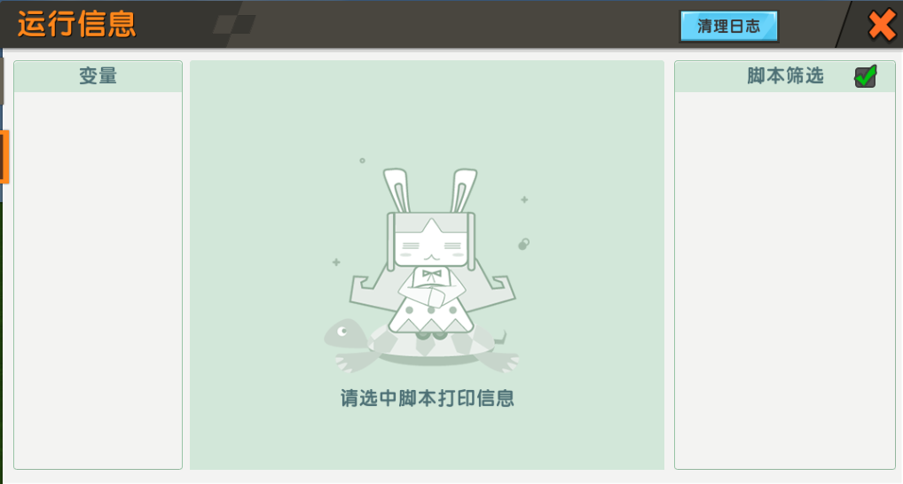

对应源文件： console.lua 。
Console这里的 Console 并不指真实的程序控制台，而是指日志，如图所示：

真正在控制台输出的信息几乎是不可见的，但是日志中的信息是可见的。
注：在开发者工具中调整至图示状态来启用日志，新地图创建时该按钮可能出于启用状态但日志并未开启，为了保证日志启用可以点击该按钮两次来刷新状态。
在玩法模式下按来打开日志窗口。
Console 包含以下函数：
log(...)
在日志以
"global"为标签格式化输出...，格式化方式与 lua 基本函数print(...)相同，等价于调用Console:logtag("global", ...);。
logtag(tag, ...)
在日志以
tag为标签格式化输出...，格式化方式与Console:log(...)相同。
如果tag不是字符串，结果会令人疑惑。
warn(message)
在日志输出警告信息
message，标签为"warning"。
这和warn(message)函数很像，但Console:warn(message)会以黄色高亮显示警告。
error(message)
在日志输出错误信息
message，标签为"error"。
该函数不像被 miniExtend 恢复的全局函数error(message [, level])，不会终止上次调用的受保护函数。
该函数会以红色高亮显示警告。
clear()
清空日志，效果和在控制台点击按钮一样。
这些函数都比较简单，就不举实例了，有疑惑可以自行测试效果。